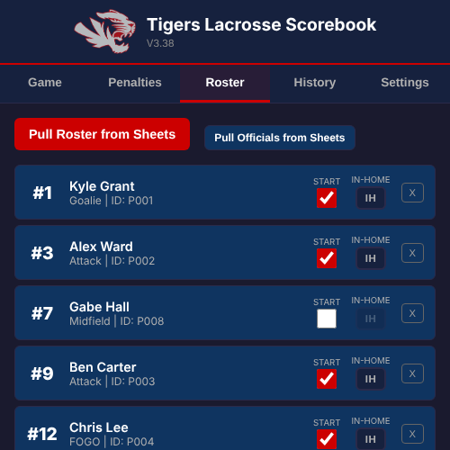
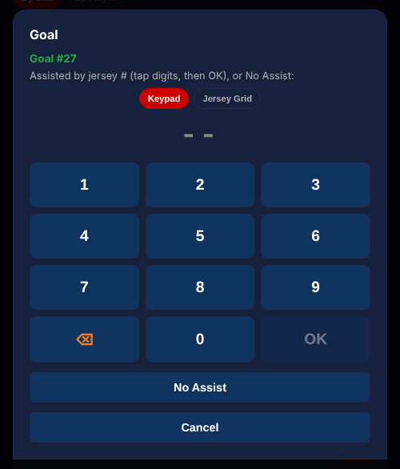
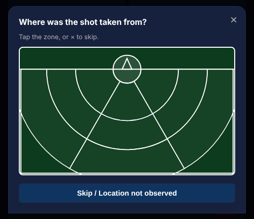
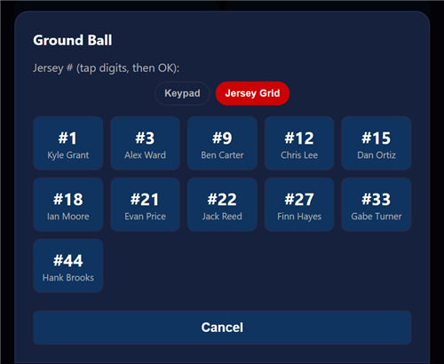

Scorekeeper Startup Guide • Setup time: about 5 minutes
Welcome! This guide gets you set up to keep score. You only have to do the
one-time setup once on your device. After that, you'll just open
the app and start the game.
You should see the scorebook with four buttons across the top:
GameRosterHistorySettings
Tip — add it to your home screen (optional but handy):
iPhone/iPad: tap the Share button, then "Add to Home Screen."
Android: tap the menu (three dots), then "Add to Home screen."
This gives you a tap-to-open icon so you don't have to type the address again.
Step 2: Connect the app to our stats sheet
Tap the Settings button at the top.
Find the box labeled "Google Apps Script URL."
Paste the Script Link I sent you into that box.
(To paste: tap and hold inside the box, then choose Paste.)
Tap Save.
Settings: paste the Script Link, then tap Save
Step 3: Make sure the connection works
Still on the Settings screen, tap Test Connection.
You should see a small message confirming it connected.
✅ If it says connected — you're good, go to Step 4.
❌ If it shows an error — double-check you pasted the
entire Script Link (they're long and easy to cut off).
Re-paste it, tap Save, and try Test Connection
again. If it still fails, contact me.
Step 4: Load the team roster
Tap the Roster button at the top.
Tap Pull Roster from Sheets. The player list fills in automatically.
Tap Pull Officials from Sheets (this loads the referee/officials names you'll pick from before a game).

Roster: tap Pull Roster from Sheets
That's it — setup is done. You won't need to repeat Part 1 on this device.
Part 2 — Getting ready for a game
Do this shortly before game time.
Step 1: Open the app and check the roster
Open the app (tap your home-screen icon, or go to the web address).
Tap Roster and confirm the players are listed.
If the list looks empty or out of date, tap Pull Roster from Sheets again to refresh it.
Step 2: Set up the game
Tap the Game button at the top.
Fill in the game details:
Opponent name
Date (it usually defaults to today)
Location (Home or Away)
Tap Start Game.
A short pop-up appears to capture game details (weather, officials, start time, etc.).
Fill in what you know and tap Start Game again to begin.
Anything you're unsure of can be left as-is.
Game tab before the game: enter the opponent, then Start Game
You're now ready to score the game. 🥍
Part 3 — Scoring the game
The app works the way stats are called out: Stat, Player, Time (only if needed).
For example: "Ground ball, number 3." Or: "Goal, number 27, assisted by number 9, time 11:15."
On the Game tab, make sure By Stat is selected at the top of the screen.
Game tab with By Stat selected
Recording a stat
Tap the stat (for example Ground Ball).
Tap the jersey number on the keypad (one or two digits), then tap OK.
Ground Ball: key in #3, then OK
That's it. The stat shows up in the Event Log at the bottom of the screen.
Counts a shot too. Asks where the shot was taken from
Shot location is the least important detail. If you missed it, tap Skip.
Recording a goal
Enter it in the same order it is called out:
Tap Goal.
Enter the scorer's jersey number, tap OK.
Enter the assist jersey number and tap OK, or tap No Assist.
Enter the time on the clock as four digits (for example 0934 for 9:34), tap OK. The time is required for every goal.
Tap the shot location, or tap Skip.

Step 3: the assist, or No AssistStep 4: the time on the clock

Step 5: the shot location, or Skip
The goal also counts as a shot and a shot on goal automatically. Do not enter those
separately. Nothing is saved until the last step, so if you tap Cancel before
then, no goal is recorded.
If the app says a jersey number doesn't exist
The message "Jersey # doesn't exist on the roster" means that number is not on your roster.
Tap Re-enter to try again, or Cancel.
If the number is right, the roster may be out of date. Pull it again (see Part 2).
A jersey number that is not on the roster
Penalties
Penalties work in the same order as everything else.
Tap PENALTY and pick the team (and the player for the Tigers).
Enter the time on the clock when the penalty was called (four digits, for example 0845). Take care with this one. The app uses it to work out how much of the penalty has been served.
Pick the penalty, then the duration.
For a personal foul, a Locked in box appears. Tick it when the penalty is non-releasable, which means a goal will not release it. Technical fouls can never be locked.
Every active penalty appears in the Active penalties box, under the quarter buttons.
The Active penalties box
EVEN, MAN-UP and MAN-DOWN are indicators, not buttons. The app works them out from the penalties in the box, so you never tap them. If both teams have a penalty it shows EVEN (1 v 1). Two penalties against one team shows MAN-DOWN (2).
When a penalty ends, tap Served next to it. The app does not run a clock, so it relies on you for this. Clear all removes every penalty and asks you to confirm first.
Penalties called at the same time against both teams show "overlap locked". The shared time cannot be released by a goal.
What a goal does to penalties
After you enter the goal's time, the app compares it with when each penalty started.
Penalties on the team that was scored on are released, unless they are locked or still inside their overlap time.
The team that scored keeps its own penalties.
If a penalty had already run out (you forgot to tap Served), a "Penalty already expired" message appears. Tap OK. That goal is not counted as a man-up or man-down goal, and the strength goes back to what is really left.
Undo on the goal puts back every penalty it released or cleared.
If you tap Cancel (leave blank) on the goal time, nothing is released.
Other options
Jersey Grid: if you would rather tap a player than type a number, tap
Jersey Grid at the top of the jersey screen. The app remembers your choice
on this device. Tap Keypad to switch back.
By Player: tap By Player at the top of the Game tab to see
player cards. Tap a player first, then the stat.
Ejections: use the EJECTION button, same as always.
Fixing a mistake: find the entry in the Event Log and tap Undo.

Jersey Grid: tap the playerBy Player view: player cards
Part 4 — Saving the game (the PIN)
When the game ends and you save it to the team sheet, the app will ask for the
Stats PIN the first time on your device.
When prompted, type the Stats PIN I sent you.
The app remembers it on that device, so you won't be asked again.
Why the PIN? It protects our official stats so only
our scorekeepers can save games. Viewing the app, loading the roster, and keeping score
never need the PIN — only saving a finished game does.
If you ever mistype it or need to change it: go to
Settings → Stats PIN →
Change / Clear Saved PIN.
Quick troubleshooting
What you see
What to do
"Set Apps Script URL in Settings first"
You skipped Part 1, Step 2. Go to Settings, paste the Script Link, tap Save.
Roster is empty
Tap Roster → Pull Roster from Sheets.
Test Connection fails
Re-paste the full Script Link (they get cut off easily), tap Save, try again.
App looks like an old version
Fully close the browser and reopen it.
"Jersey # doesn't exist on the roster"
That number is not on the roster. Tap Re-enter, or pull the roster again if it is out of date.
EVEN / MAN-UP / MAN-DOWN won't respond when tapped
They are indicators. Add or remove penalties in the Active penalties box and they update on their own.
"Penalty already expired" message after a goal
A penalty had run out before the goal. Tap OK. Next time, tap Served when a penalty ends.
Game won't save / asks for PIN
Type the Stats PIN I sent you. If rejected, use Settings → Stats PIN → Change / Clear Saved PIN and re-enter it.
Game-day checklist
App opens and shows the four tabs
Roster is loaded and current
Opponent, date, and location entered on the Game tab